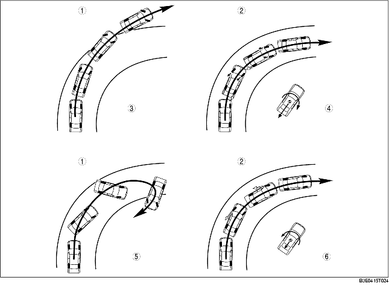

• The DSC HU/CM, integrating both the hydraulic unit (HU) and control module (CM), has been adopted, resulting in a size and weight reduction.
• A combined sensor, integrating both the yaw rate sensor and lateral-G sensor, has been adopted, improving serviceability.
• The specialized controller area network (CAN) system has been adopted for use between the combined sensor and DSC HU/CM, improving serviceability and reliability.
• An enhanced malfunction diagnosis system, used with the WDS or equivalent, improving serviceability.
• The ABS prevents wheel lock-up during braking. The TCS detects drive wheel spin due to the accelerator pedal being pressed too hard or similar causes and controls engine speed to suppress wheel spin. With these systems, safety is assured when driving or stopping.
• Additionally, sudden changes in vehicle attitude, due to evasive steering or road conditions, are controlled by the DSC. The DSC suppresses vehicle sideslip when driving due to vehicle spin (oversteer) or drift-out (understeer) by controlling braking and engine speed. At this time, the DSC indicator light illuminates to alert the driver that the DSC is operating due to a dangerous situation. As a result, the driver can calmly react and is provided leeway for the next maneuver, resulting in safe driving conditions.
• In this way the combination of DSC + ABS + TCS ensures driving, stopping and turning safety in all aspects.

.
|
1
|
Without DSC
|
|
2
|
Vehicles with DSC
|
|
3
|
Drift out (understeer)
|
|
4
|
Drift out (understeer) suppression
|
|
5
|
Vehicle spin (oversteer)
|
|
6
|
Vehicle spin (oversteer) suppression
|